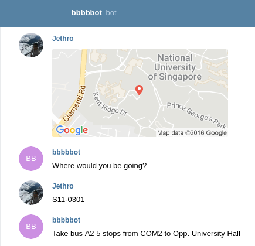
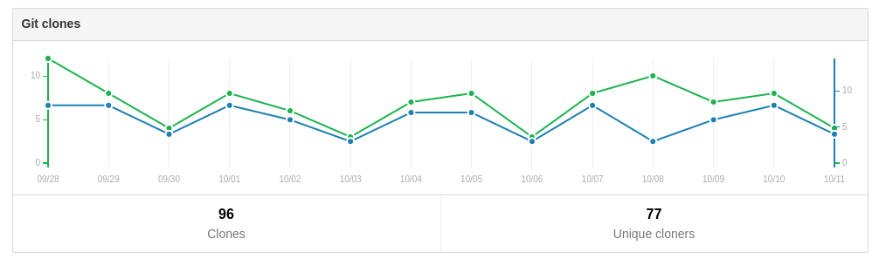

Open Source, and How I Got Here
Jethro Kuan
Created: 2016-10-12 Wed 11:00
whoami
- NUS CS (Y1)
- 6 years of coding
- 0.5 years of programming
- @jethrokuan
coding != programming
Pay attention in school!
- Everyone can code, but not everyone can program
- Coding will most likely be your livelihood
- Being able to program distinguishes you
\(coding \cap programming \ne \phi\)


How I got into open source

Fisherman
What's the usage like?
z
- \(\approx\) 1200 unique users

fzf
- \(\approx\) 1000 unique users

What's it like maintaining my work?
- ~2 Github issues per month
What's stopping you?
- I'm not good enough
- I don't have the time
- I've no idea what to make
What I've learned
CS-wise, lots!
- Exposure to new and old ideas
- "Been there, done that"
- Community guidance
You don't always work with the nicest people
- Oh My Fish DMCA takedown
- code superiority doesn't give you the right to diminish others
Mistakes will be made
- Careful what you say
- Take responsibility
Where can you start?
- Libraries you use and love
- Devise
- React
- etc. etc.